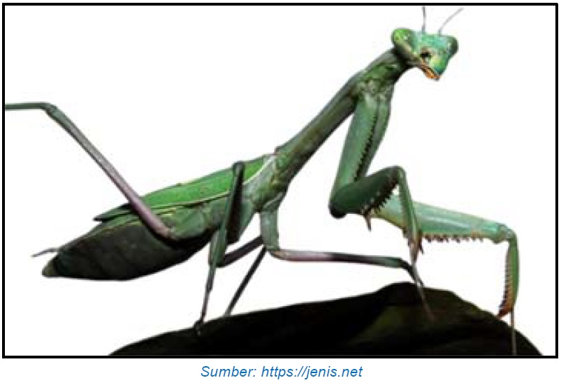
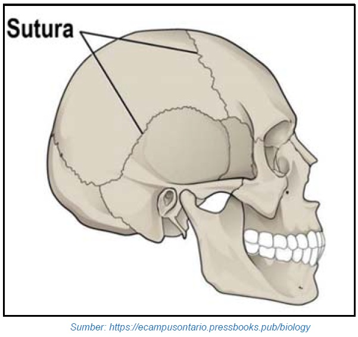
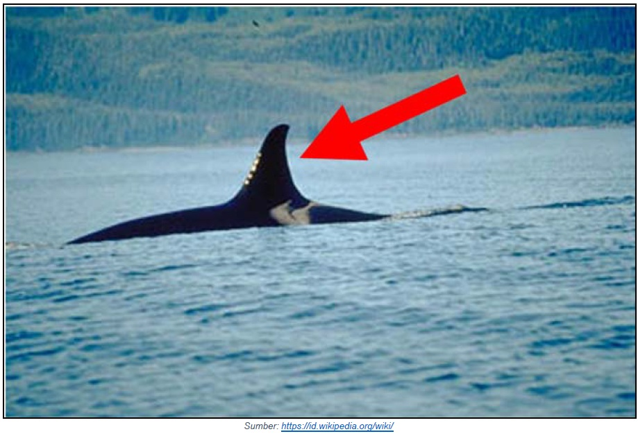
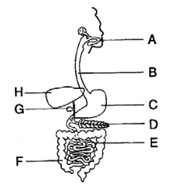
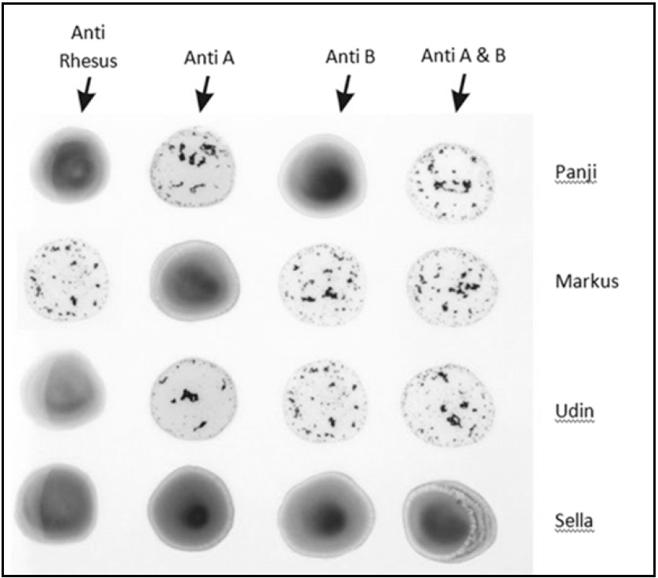
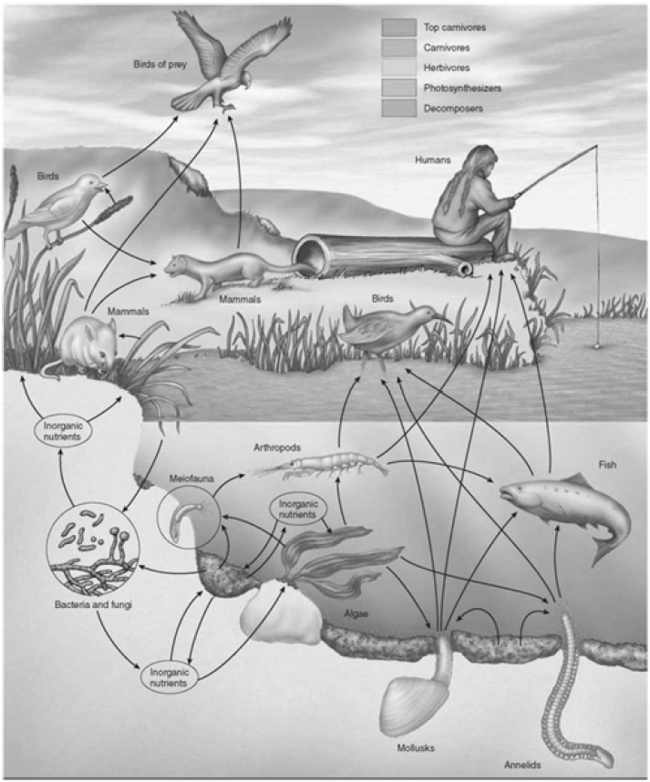
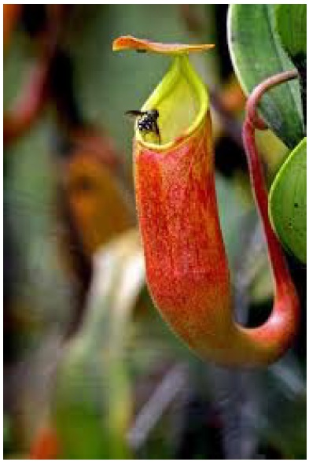
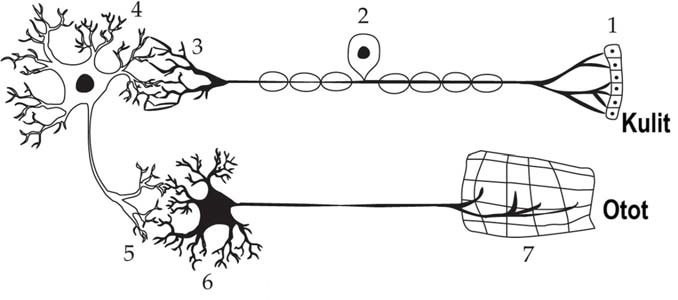
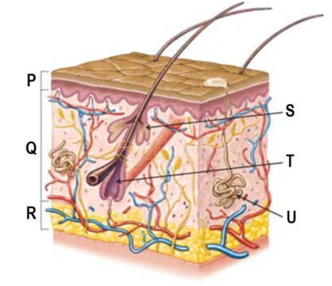

Nama Peserta:
1. Perhatikan gambar berikut.
Pernyataan yang tepat berkaitan hewan pada gambar di atas adalah....
2. Tiga tulang pada telinga yang menghubungkan antara gendang telinga dengan rumah siput adalah....
3. Berikut pernyataan yang tepat mengenai sel darah merah pada manusia adalah....
4. Perhatikan beberapa ciri hewan berikut:1. Suhu internal tubuh dipengaruhi suhu lingkungan.2. Kulit dilapisi sisik kering.3. Secara periodik mengalami ganti kulit.4. Rahang fleksibel untuk menelan mangsa.Hewan yang tidak memiliki ciri di atas adalah....
5. Perhatikan gambar berikut.
Tipe sendi dari struktur pada gambar adalah....
6. Makhluk hidup yang berperan penting pada keberlangsungan siklus materi di dalam ekosistem adalah....
7. Tumbuhan yang memiliki bunga tidak mungkin masuk ke dalam kelompok....
8. Dua organisme yang mempunyai kesamaan genus memiliki kemungkinan berikut....
9. Dalam ekosistem sawah terjadi pola interaksi rantai makanan: Padi → Tikus → Ular → Elang. Bila ular musnah, kemungkinan yang terjadi....
10. Makanan yang disimpan dalam lemari es tidak mudah membusuk. Hal tersebut disebabkan....
11. Tahapan setelah membuat hipotesis dalam metode ilmiah adalah....
12. Pernyataan yang tidak tepat berkaitan dengan perbandingan gigi kamu dan ayahmu adalah....
13. Hewan berikut yang tidak memiliki lidah adalah....
14. Perhatikan gambar berikut.
Fungsi dari bagian yang ditunjuk pada gambar adalah....
15. Hewan yang tidak bernapas menggunakan insang adalah....
16. Darah yang mengandung banyak oksigen tidak akan ditemui pada bagian berikut, kecuali....
17. Berikut ini pernyataan yang tidak berkaitan dengan karakteristik tumbuhan yang beradaptasi pada lingkungan miskin unsur hara....
18. See the figure below.See the figure below.
Glucose is normally absorbed by structure...., and protein is firstly digested in....
19. Radit memeriksa golongan darah teman-temannya. Hasil tampak pada gambar.
Teman Radit yang bergolongan darah AB rhesus (-) adalah....
20. See the picture bellow.
If there is pollution of harmful substances in the water, Birds of prey and humans as the highest trophic level are most at risk of accumulating these substances. This phenomenon is called....
21. Perhatikan gambar berikut.
Pernyataan yang tidak tepat berkaitan dengan tumbuhan tersebut adalah....
22. Every year, humans deforest millions of hectares of tropical rain forest. Which of the following is a likely consequence of this deforestation?
23. Infeksi saluran kemih dapat disebabkan oleh bakteri yang masuk dari luar tubuh. Rute infeksi menuju ginjal adalah....
24. Perhatikan gambar berikut.
Jalur yang mewakili impuls saraf dari sumsum tulang belakang ke sel efektor adalah....
25. Perhatikan gambar berikut.
Bagian yang menghasilkan senyawa yang melembapkan kulit dan mencegah dehidrasi adalah....